La condición corporal de tu rodeo, en el bolsillo.
Evaluación automatizada de la condición corporal en ganado de carne con visión por computadora y aprendizaje profundo.
Nicole Camila Blanco · Nicolás Sebastián Fernández
Tutor: Lucas Guido Katarzynski · Ingeniería en Informática · UADE · 2026
01 · El problema
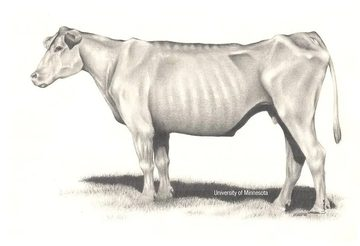
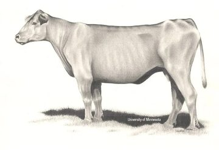
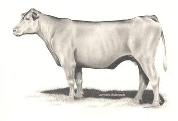
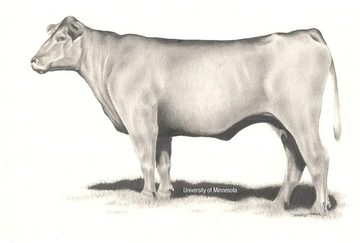
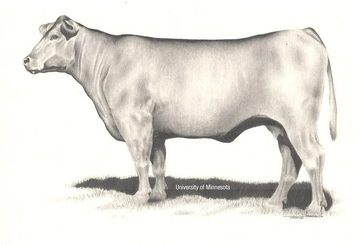
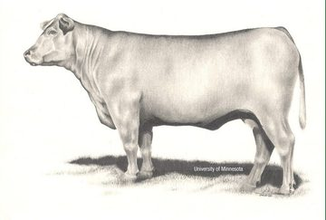
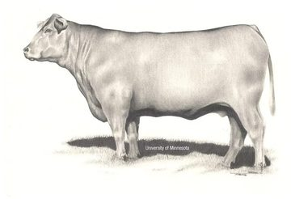
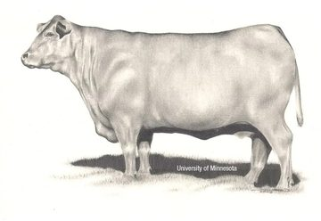
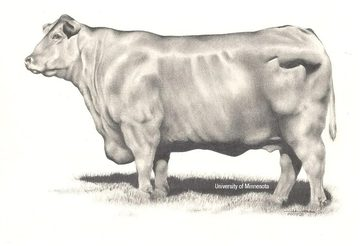
productores y asesores entrevistados la evalúan a ojo, sin instrumento
tarda una vaca en cambiar su estado: agosto es la última ventana
de preñez al subir la CC de 2,5 a 3,5 (escala 1–5)
Fuentes: user research propio (5 entrevistas y 5 jornadas de observación, 2026); +28 %: SAPA. Ilustraciones de la escala: University of Minnesota.
02 · La brecha
Fuente: estado del arte del informe (cap. 2), incluidos CControl.Ar (cámara 3D fija) y EdgeBCS-YOLO (2026).
03 · Nuestra solución
Rodea en el teléfono
Rodea 0.4.1 con el modelo de prueba: la app lo avisa en pantalla.
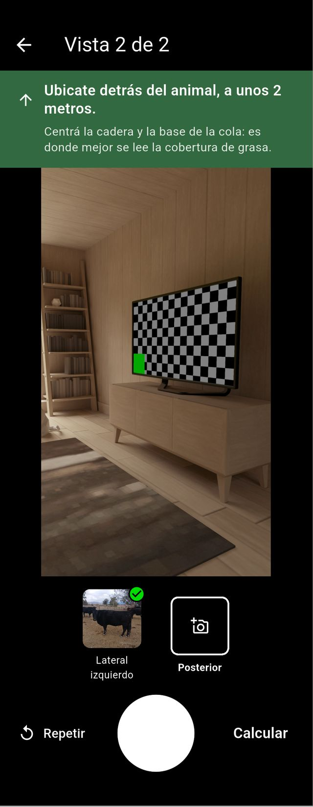
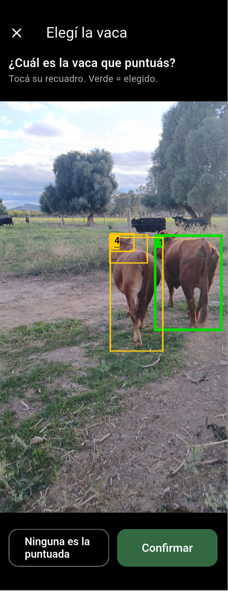
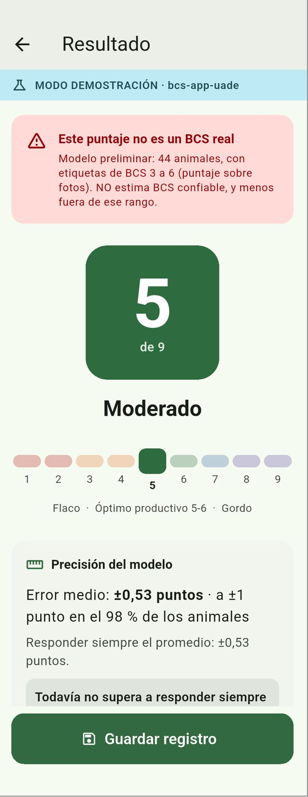
04 · Impacto
Si evita diez vacas vacías en el año, se paga sola.
E5 · médico veterinario, más de 20 años en cría Aberdeen Angus, La Pampa
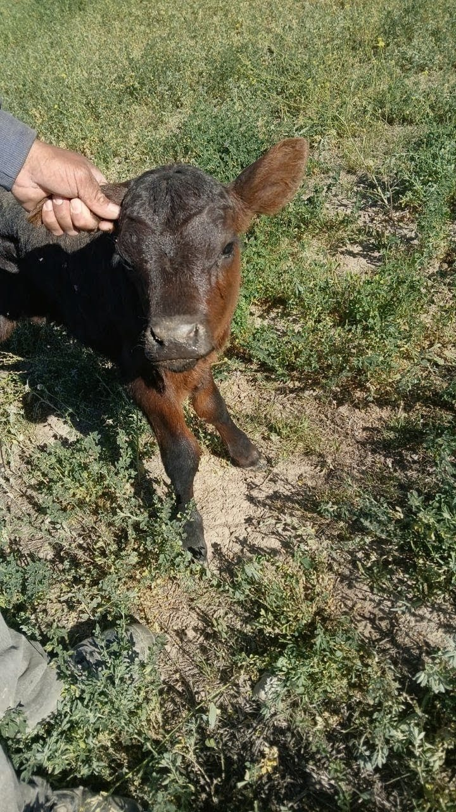
05 · Generación del dataset
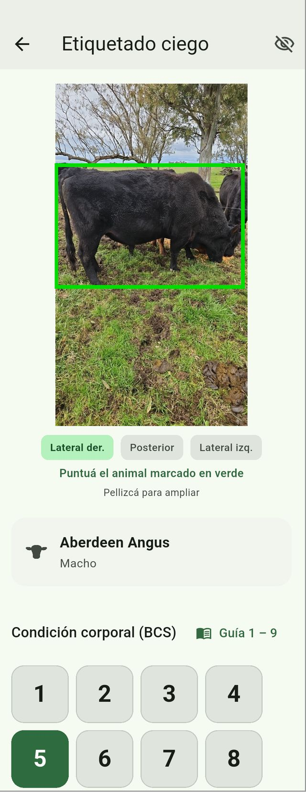
06 · Lo que encontramos en los datos
puntos en promedio: foto contra vivo, sobre los mismos animales
los evaluadores ordenan bien, pero comprimen la escala a la mitad (láminas IPCVA)
07 · Arquitectura técnica
08 · Modelo de ML
Error medio por animal (MAE)
Asigna CC 5 a 43 de 44 animales.
Probabilidad de detectar la señal, si existe
La cadena está completa: falta dato, no modelo.
Regresión acotada 1 + 8·σ(x), validación cruzada en 5 particiones agrupadas por animal. Poder simulado con 60 réplicas sobre la estructura real de los datos, con r = 0,7 entre imagen y CC.
09 · Modelo de negocio · B2B
78.720 productores con más de 100 cabezas → meta: 1.330 suscriptos al año 5 (1,7 %)
| Plan | Para quién | USD/mes |
|---|---|---|
| Gratuito | Hasta 20 evaluaciones por mes | 0 |
| Productor | 101 a 250 cabezas | 25 |
| Establecimiento | 251 a 1.000 · acceso del asesor | 45 |
| Empresa | Más de 1.000 o varios campos | 85 |
Escenario base a 5 años, USD constantes, tasa CAPM con riesgo país. Productores: MAGyP (2025).
Lo que aprendimos
El cuello de botella es el dato, no el modelo. Y el instrumento para conseguirlo ya funciona en el campo.
Anexo · Para profundizar
Tocá un tema para ir a su slide; «↩ Volver» regresa a donde estabas.
A1 · User research
Junio a octubre de 2026. Estrategia cualitativa, triangulada con la observación en campo (informe, cap. 4).
A2 · Hallazgos
| Hipótesis | Resultado | Qué cambió en el diseño |
|---|---|---|
| La CC se evalúa a ojo, sin instrumento | Confirmada | Rodea asiste al experto, no lo reemplaza |
| Las discrepancias no tienen cómo resolverse | Confirmada | La concordancia entre expertos es el piso de referencia |
| Sin señal en el lugar de evaluación | Confirmada | Todo el flujo corre en el teléfono |
| El productor de cría es quien más lo valora | Matizada | La terminación queda como caso de alto valor futuro |
| Se decide animal por animal | Matizada | Lectura por rodeo con alerta tipo semáforo |
| Hay disposición a probarlo | Con reservas | Demostración sobre los animales del propio campo |
A3 · User personas
Nombres y frases sintéticos: representan arquetipos, no informantes identificables.
A4 · Estado del arte
Esquema sobre las ocho soluciones sistematizadas en el informe (cap. 2): el orden en cada eje es el del informe; las distancias son ilustrativas.
A5 · Lean Canvas
La condición corporal de tu rodeo, objetiva y en el momento, desde el celular y sin señal.
A6 · Escenarios y financiamiento
VAN pesimista en USD: sequía y un competidor gratuito; no recupera
precio de equilibrio: un 18 % debajo del supuesto
Flujo acumulado en miles de USD. Financiamiento no dilutivo: concursos AgTech, aportes no reembolsables, incubadoras y la Ley 27.506 de Economía del Conocimiento.
A7 · Rodea Campo · captura y etiquetado
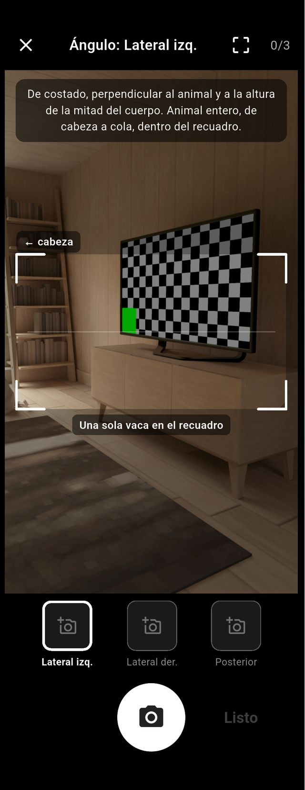
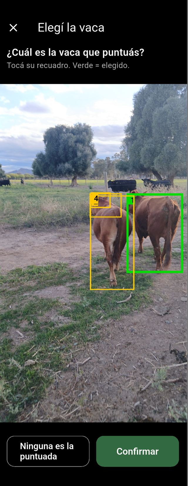
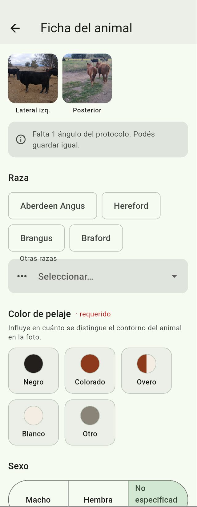
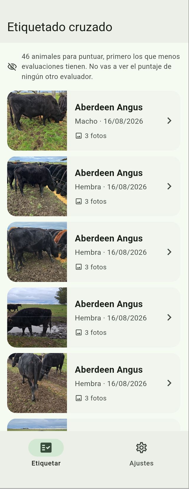
A8 · Rodea Panel · gestión web
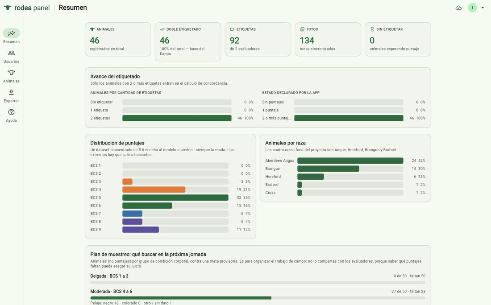
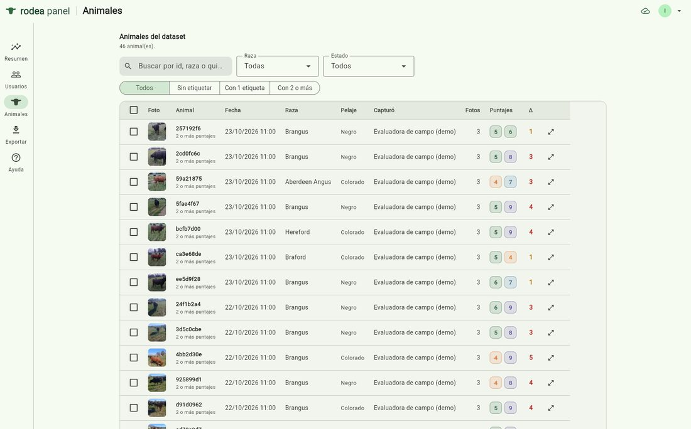
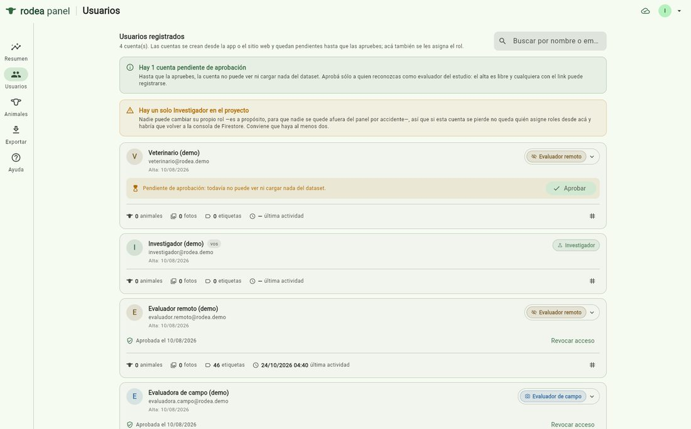
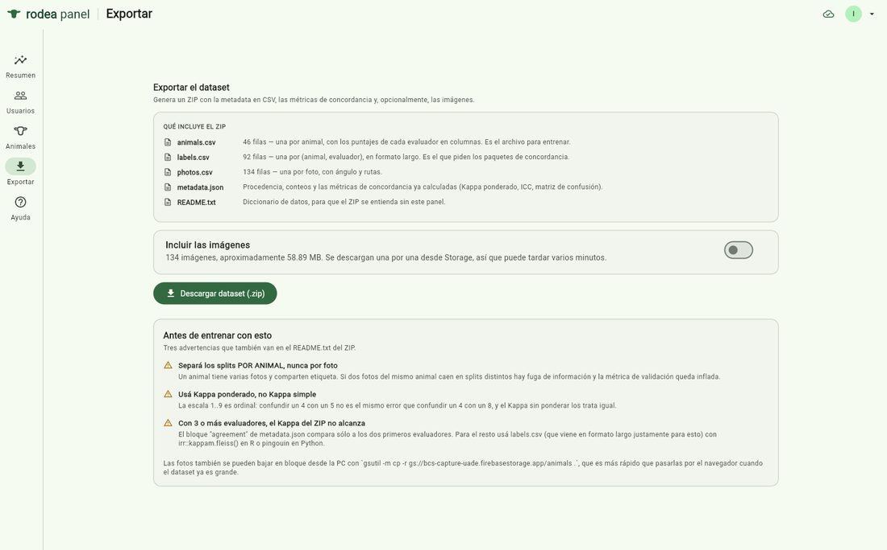
A9 · Rodea · app de producto
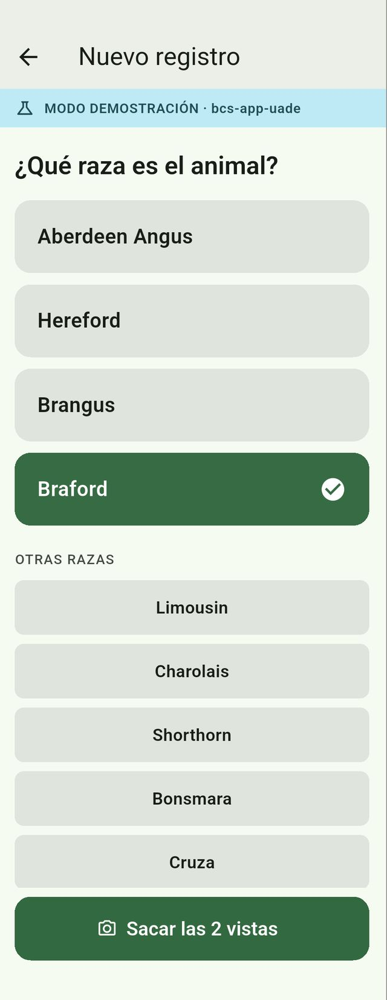
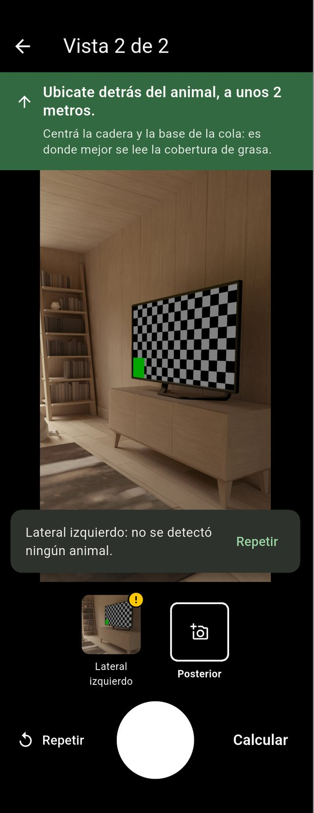
A10 · Requerimientos
| Requerimiento | Qué exige | Estado |
|---|---|---|
| RNF-02 · Sin conexión | Captura, calidad, estimación y guardado solo con el teléfono | Cumple |
| RNF-03 · Rendimiento | ≤ 2 s por animal (p95) en gama media, Galaxy A15 | Gama alta: 564 ms |
| RNF-04 · Exactitud | ≥ 75 % a ±1 punto en escala 1–9, validado por el usuario (E5) | Depende del dataset |
| RNF-01 · Usabilidad | ≤ 3 interacciones por captura; botones operables con guantes | Prueba SUS pendiente |
| RNF-07 · Privacidad | Consentimiento previo; ubicación a 2 decimales (≈ 1 km) | En corrección |
A11 · Decisiones de arquitectura
| Elegimos | Descartamos | Por qué |
|---|---|---|
| Inferencia en el teléfono | Inferencia en servidor | En el potrero no hay señal |
| Caché offline de Firestore | Base SQLite propia | Una sola fuente de verdad: la cola es una consulta |
| Escrituras por lote, idempotentes | Transacciones | Exigen leer del servidor: fallan sin conexión |
| Ciego en reglas del servidor | Ocultarlo en la pantalla | El dato no viaja; se verifica con pruebas |
| Kappa ponderado | Kappa simple | Escala ordinal: 4 contra 5 no es 4 contra 8 |
| EfficientDet-Lite0 | YOLOv8 | Licencia Apache 2.0 y no AGPL; medido antes de integrar |
Detector contra 95 regiones confirmadas: 32 bits (13,8 MB) y 16 bits (7,3 MB) encuentran al animal en el 100 % y aciertan la caja en el 95 %; 8 bits (4,6 MB) baja a 88 % y no cumple. Se integró 16 bits.
A12 · Corridas de entrenamiento
| Corrida | Datos | MAE | ±1 | MAE trivial |
|---|---|---|---|---|
| 1 | 16 animales · CC 5–9 · en vivo, 1 evaluador | 1,24 | 56 % | 1,22 |
| 2 | 46 animales · CC 4–7 · fotos, 2 evaluadores | 0,56 | 98 % | 0,47 |
| 3 | 51 animales · fotos, 3 evaluadores | 0,53 | 98 % | 0,53 |
MobileNetV3-Large; corridas 2 y 3 entrenando solo la cabeza. ±1 alto no implica buen modelo: con etiquetas entre CC 4 y 6, responder siempre 5 logra lo mismo.
A13 · Pruebas
| Hallazgo en el campo | Mejora |
|---|---|
| 25 % de las laterales con el ángulo invertido | Guía con el lado de la cabeza marcado |
| Fotos movidas u oscuras descubiertas tarde | Control de nitidez y brillo en el teléfono |
| Primera detección de más de 8 s | Precalentamiento del detector |
| El teléfono recortaba distinto que el entrenamiento | Preprocesamiento idéntico, píxel por píxel |
A14 · Viabilidad legal y seguridad
Datos y seguridad
Propiedad y responsabilidad
A15 · Cumplimiento de objetivos
| Objetivo | Evidencia | Estado |
|---|---|---|
| OE1 · Dataset | 144 imágenes de 51 animales; doble etiquetado y concordancia medidos | Parcial · 29 % del volumen |
| OE2 · Baseline | Pipeline y tres corridas; falta el conjunto y la segunda arquitectura | Parcial |
| OE3 · Mejora significativa | Protocolo y pruebas estadísticas definidos | Pendiente |
| OE4 · En el teléfono | Sin conexión, paridad exacta, detector de 16 bits; falta gama media | Parcial |
| OE5 · Usabilidad | Protocolo SUS definido y usuarios comprometidos | Pendiente |